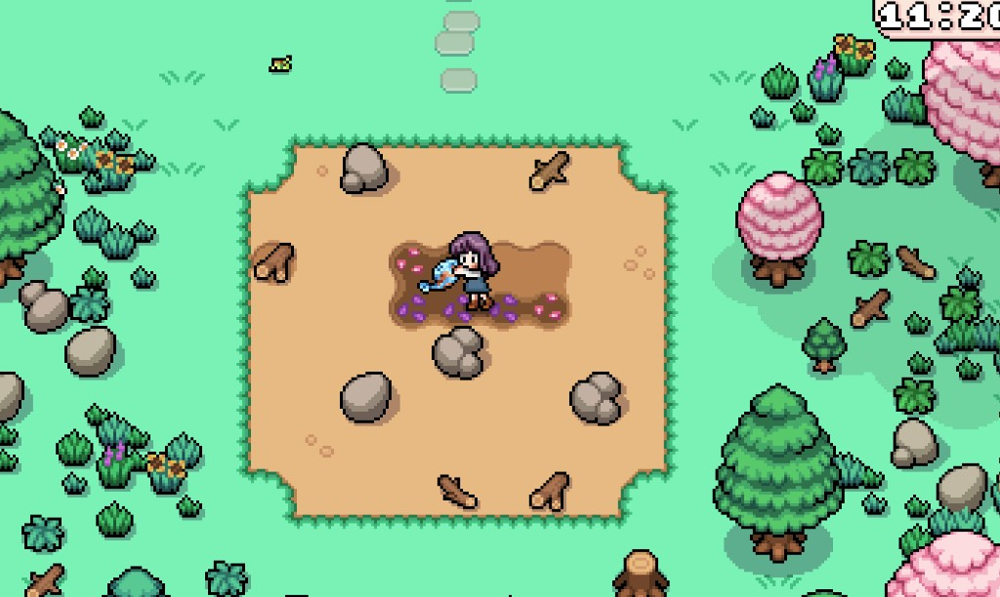
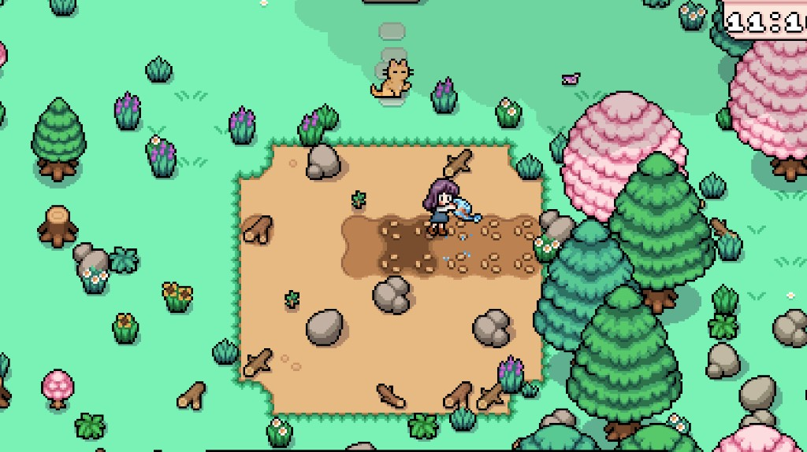
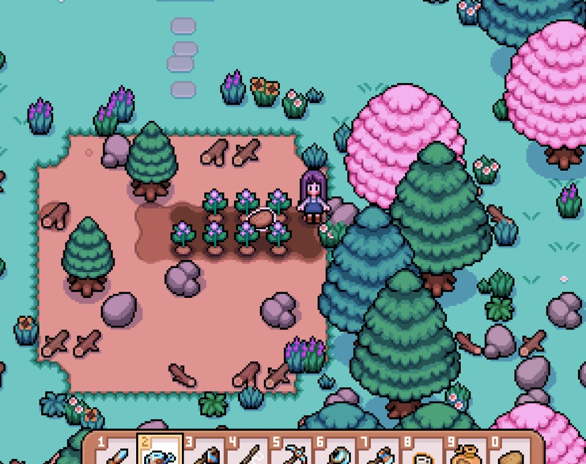
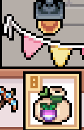

Quick answers
- Plant only what you will water every sunny morning.
- Seeds are not harvested crops—check icons before selling.
- Rain frees outdoor watering; use the morning wisely.
- Keep a few quality harvests for quests or museum before shipping all.
- Upgrade watering pain before vanity tools.
Patch size rule
Start tiny. Our early save used a porch-sized grid and still made money. Giant dry fields look busy and pay nothing.
Seeds vs produce
Shop bags are seeds. Wait for growth before hunting “turnips” for quests that want harvested crops. Confirm the quest icon in your journal.
Safe to skip
- Every seed type on day one
- Spreadsheets of growth days before you enjoy the loop
Screenshots from our save
Real Fields of Mistria shots from our first-season play. Captions in English; in-game UI language may differ.




FAQ
Do crops need water in rain?
Usually outdoor crops are covered—double-check your version, then spend energy elsewhere.
When do I expand?
When watering feels boring, not scary.
Unofficial fan guide. Not affiliated with NPC Studio. Verify details in your game version.